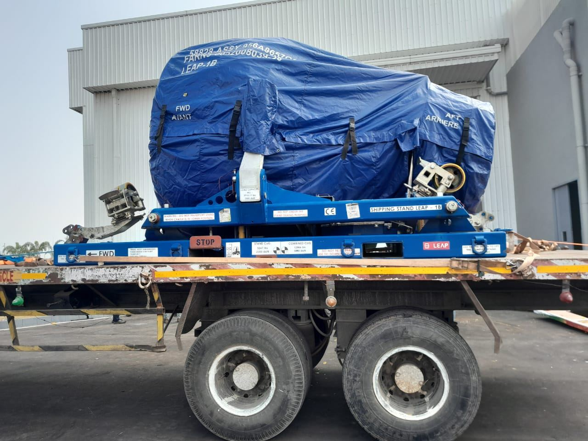
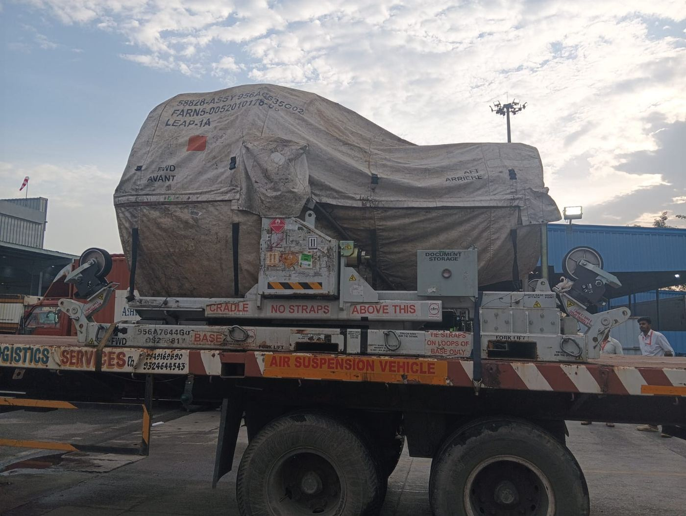

Air suspension transportation for sensitive, fragile and high-value cargo that requires controlled road movement. Shubham Logistics provides specialised transportation using air suspension trailers for industrial, commercial and other cargo requiring reduced vibration during transit.

Shubham Logistics provides air suspension transportation for sensitive, fragile and high-value cargo, using air suspension vehicles for smoother road movement and reduced vibration during transit.

Shubham Logistics provides air suspension trailer transport for cargo that requires additional care during road movement. The service is suitable for shipments where reducing vibration and maintaining controlled transportation conditions are important.
Specialised road transportation using air suspension trailers for cargo requiring careful movement.
Transportation for cargo where road vibration, handling and movement during transit need careful consideration.
Road transportation arrangements based on cargo characteristics, route requirements and delivery schedules.
Air suspension transportation can be arranged for cargo that requires careful road movement and reduced vibration during transit. The suitable transportation arrangement depends on the cargo specifications and route.
Transportation for industrial equipment where careful handling and controlled road movement are important.
Specialised transportation for equipment and components that require careful movement during road transit.
Road transportation for fragile machinery and components where excessive movement can be a concern.
Transportation for high-value equipment requiring a carefully planned road movement.
Specialised cargo transportation based on shipment dimensions, weight, handling and route requirements.
Controlled road movement for commercial equipment that requires careful transportation.
Air suspension transport services can be arranged for domestic, import and export shipments where cargo requires specialised road transportation.
Air suspension trucks and trailers use an air-based suspension system designed to provide a smoother ride than conventional suspension systems. For transportation applications, this can help reduce vibration and road impact on sensitive cargo during transit.
Used for specialised transportation where cargo protection and controlled road movement are important.
Used for road movement of sensitive and high-value cargo based on shipment requirements.
Transportation arrangements selected according to cargo specifications, route conditions and delivery requirements.
Shubham Logistics provides specialised transportation on major industrial and commercial corridors, with route planning based on cargo requirements and delivery locations.
Other origin-destination combinations can also be arranged based on cargo requirements, vehicle availability and route conditions.
Air suspension cargo can be moved between ports, CFSs, ICDs, factories, warehouses and project locations based on the shipment requirements.
Transportation of sensitive cargo from ports to industrial and manufacturing facilities.
Specialised road transportation from port locations to warehouses and distribution facilities.
Transportation between ports and CFS or ICD facilities based on cargo and route requirements.
Movement of specialised cargo from CFS and ICD facilities to factories and industrial destinations.
Controlled road transportation between manufacturing facilities and warehouses.
Specialised movement of equipment and components to project locations.
Share your cargo and route details with Shubham Logistics to plan the right transportation arrangement, receive a quote and schedule your shipment.
Provide the cargo type, quantity, weight, pickup location, destination and required date.
We review the cargo, route and handling requirements to plan the suitable transportation arrangement.
Get a transportation quote based on the cargo, route and required service.
Confirm the shipment and Shubham coordinates pickup, transportation and delivery.
Air suspension transportation costs depend on the shipment and route rather than a fixed rate. The final quote is determined after reviewing the cargo and transportation requirements.
The cost depends on the cargo type, cargo dimensions and weight, pickup and delivery locations, transportation distance, vehicle or trailer requirement, loading and unloading requirements, route conditions and delivery schedule.
Shubham Logistics provides GPS-enabled transportation for shipment movement visibility. Customers can receive updates on vehicle location, route movement and delivery progress during transportation.
GPS-enabled vehicles provide visibility into vehicle location, route progress and delivery movement during the shipment.
Shubham Logistics combines long-standing transportation experience with specialised cargo movement capabilities for businesses requiring careful road transportation.
More than three decades of logistics and transportation experience.
Established fleet capacity for different transportation requirements.
Transportation across major industrial and commercial corridors in India.
Experience in container, ODC, reefer and other specialised transportation requirements.
Movement between ports, CFSs, ICDs, factories and warehouses.
Shipment movement visibility during transportation.
Find answers to common questions about air suspension transportation, suitable cargo, routes, costs and booking.
Have sensitive, fragile or high-value cargo that requires specialised road transportation? Share your cargo and route details with Shubham Logistics to discuss the right air suspension transportation arrangement.